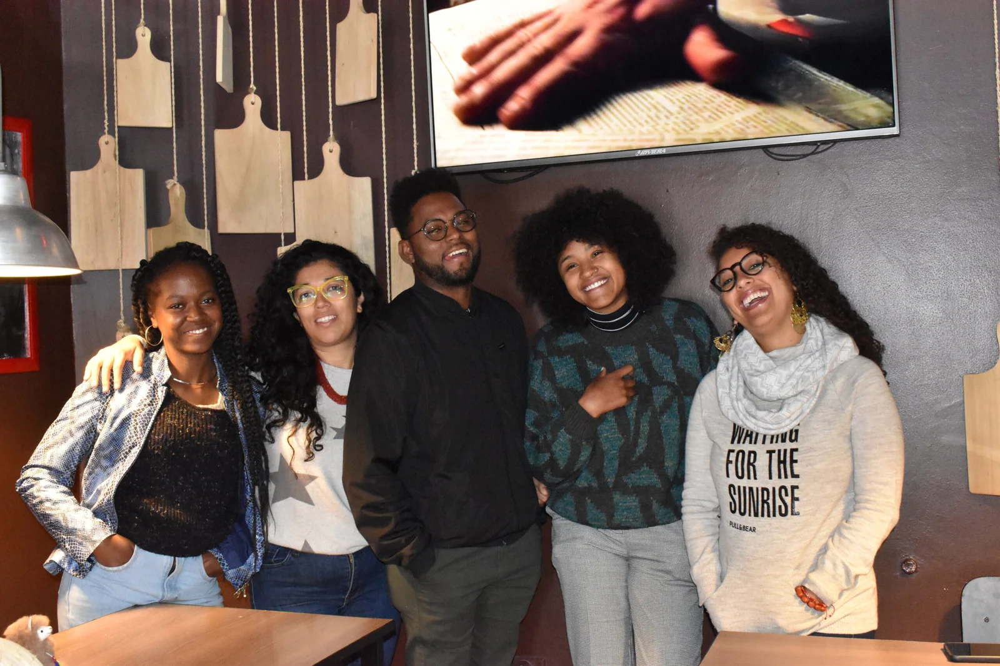
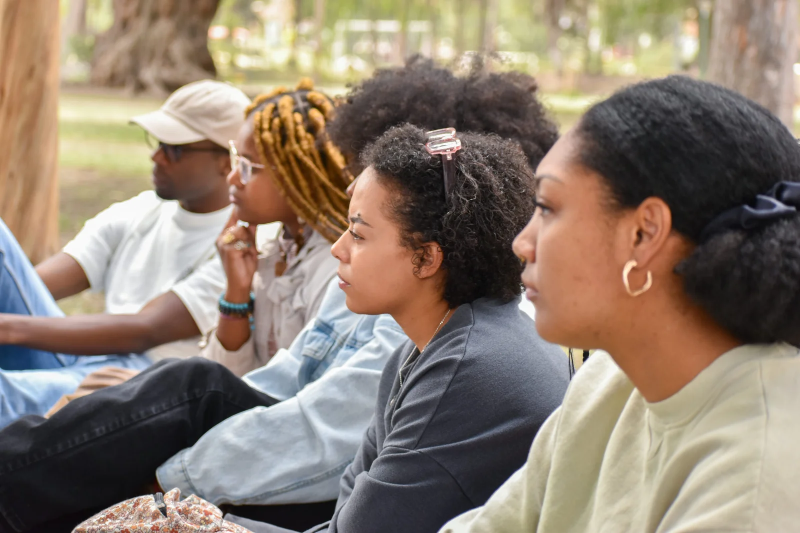
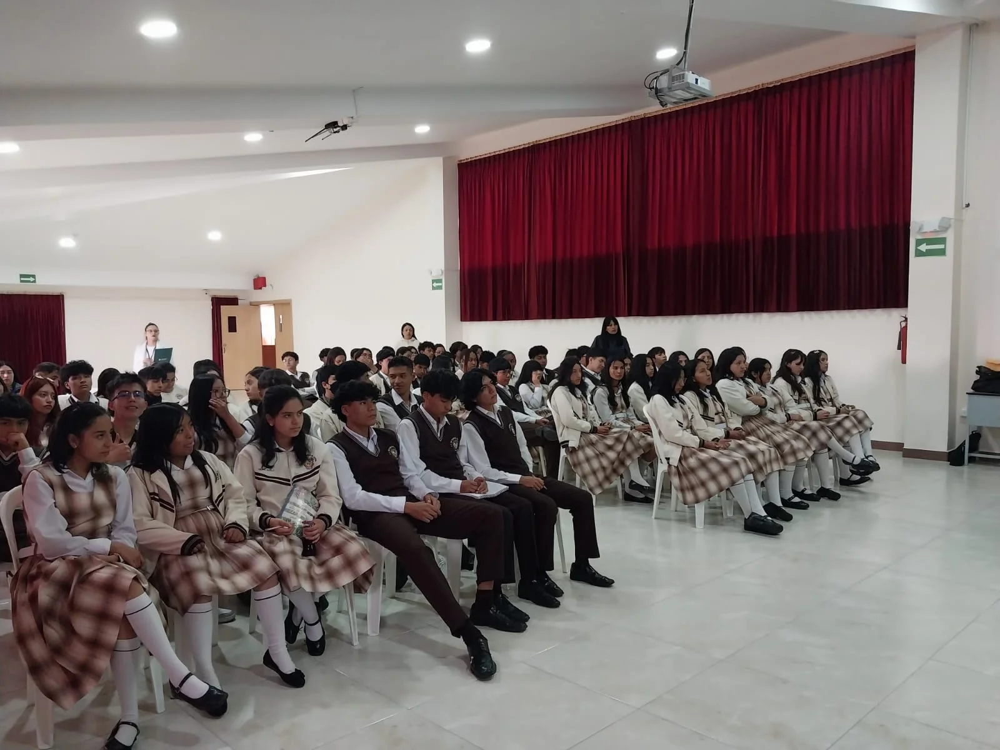
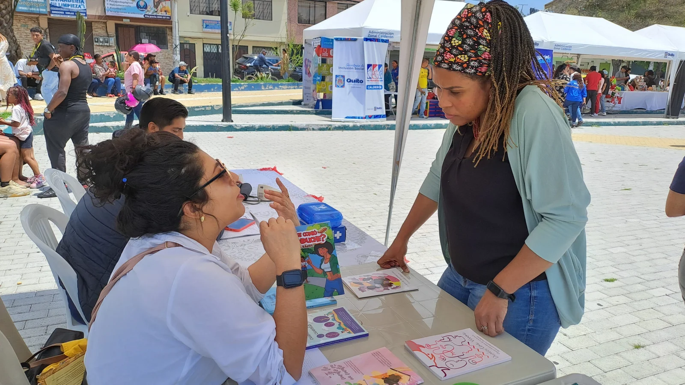
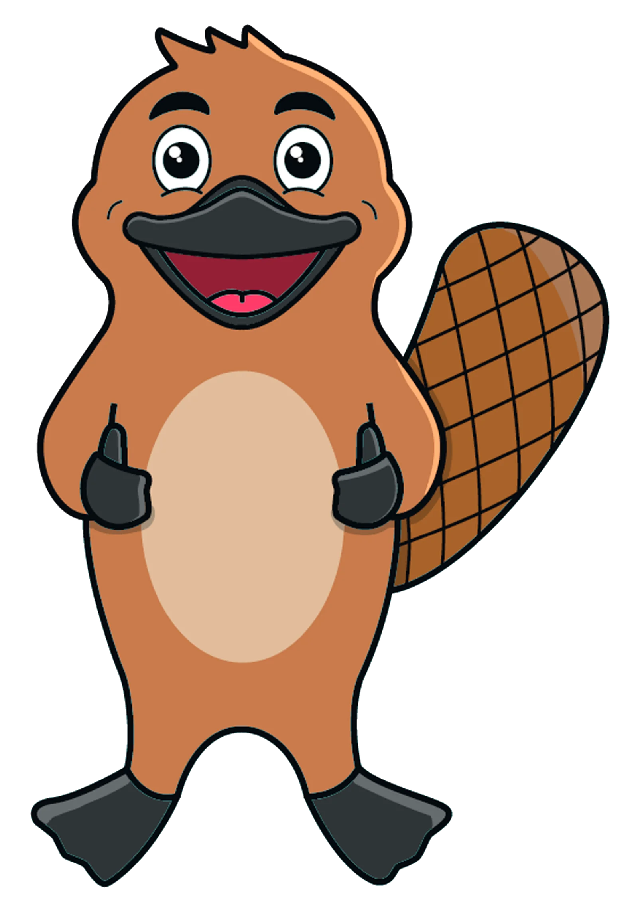

Historia
El GPA surgió en el marco del Decenio Internacional de los Afrodescendientes (2015-2024). En el 2016, ante la necesidad de un espacio inclusivo y crítico para la población afrodescendiente en Ecuador. Tras desvincularse del Consejo de Participación Ciudadana y Control Social (CPCCS), el GPA se consolidó como una organización independiente, obteniendo su personería jurídica el 20 de octubre de 2018.

Misión
Promover la visibilización de los sectores históricamente excluidos y los grupos de atención prioritaria, con énfasis en la población afrodescendiente, mediante la participación activa en el desarrollo social, económico y político del país.
Visión
Ser una organización de la sociedad civil referente en participación política y social, investigación y datos estadísticos sobre pueblos y nacionalidades del Ecuador, manteniendo el carácter integrador y la participación activa de los jóvenes.

Objetivos
Promover la participación y liderazgo de jóvenes. Impulsar la observación de políticas públicas para garantizar la equidad. Extender el accionar a escala local, nacional y regional en búsqueda del bienestar común y la justicia social.

Valores
Nosotros le brindamos suma importancia a valores como: solidaridad, honestidad, lealtad, equidad, autogestión, autoestima, proactividad, justicia social, transparencia e innovación.

GPAlito
Es un ornitorrinco de caricatura, que representa la diversidad a través de una combinación única de características. Tiene pico de pato y cola de castor, desafiando todas las expectativas y simbolizando la adaptación a diferentes hábitats.

Nombre
"GPAlito" combina las iniciales "GPA" (Grupo de Pensamiento Afrodescendiente) con el sufijo "lito", que agrega un toque de cercanía y familiaridad.
Personalidad
Amistoso, curioso, siempre listo para aprender y explorar.
Rol Institucional
Mascota oficial del GPA, simboliza la identidad inclusiva y diversa de la organización.
Mensaje
Inclusión. GPAlito representa la diversidad y la importancia de la inclusión de todos los grupos étnicos y culturales. Su lema es: ¡Buscamos lo común en lo diverso!
Directorio
María Verónica
Cevallos
Presidenta
Luis Andrés
Padilla
Vicepresidente
Sheila Alejandra
Padilla
Secretaria
Manolo Alejandro
Bolaños
Tesorero
María Carmen
Bone
Relaciones Institucionales